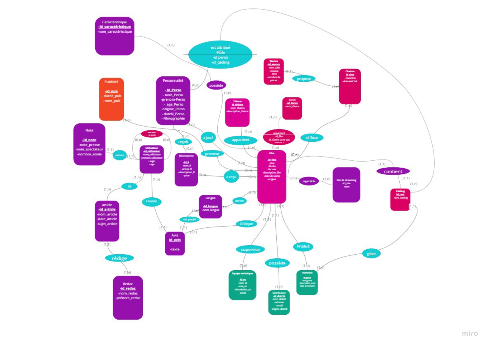
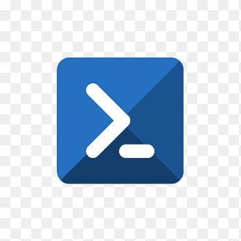
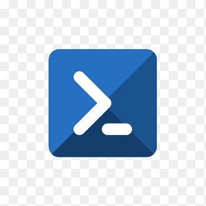

Présentation
Passionné par l'informatique et l'innovation, je suis actuellement étudiant en BUT Informatique à l'IUT de Vélizy. Curieux et motivé, j'aime résoudre des problèmes complexes et travailler en équipe pour atteindre des objectifs communs. Mon parcours m'a permis d'acquérir des compétences en développement logiciel, analyse de données et gestion de projet. Toujours en quête d'apprentissage, je cherche à intégrer un environnement dynamique où je pourrai à la fois apporter mes compétences et continuer à évoluer professionnellement.
Formation
- 2023 - 2026 : BUT Informatique, IUT de Vélizy, Université Paris-Saclay
- 2022 - 2023 : Préparation aux cursus scientifiques, Université Paris-Saclay
- 2022 : Baccalauréat ST2S (mention Bien), Lycée Marie Curie Versailles
Projets
Application de tri de cristaux en Java (Architecture MVC)

- Situation : Dans le cadre d'un projet, il fallait concevoir une application Java permettant de trier différents types de cristaux en fonction de critères spécifiques.
- Tâches : Développement d'une application en Java.
- Actions : Implémentation de l'architecture MVC pour une meilleure organisation du code.
- Résultats : Application fonctionnelle et optimisée permettant un tri efficace des cristaux. Amélioration des compétences en Java (Programmation orientée objet), structuration de code (MVC), algorithmie et conception logicielle.
Base de données de type Allociné en SQL
- Situation : Concevoir une base de données permettant de gérer une plateforme similaire à Allociné, en stockant des informations sur les films, réalisateurs, acteurs et avis des utilisateurs.
- Tâches : Conception et modélisation d'une base de données.
- Actions : Définition des relations et création des tables en SQL.
- Résultats : Une base de données robuste et bien structurée, facilitant la gestion et la récupération d'informations sur les films. Développement de compétences en SQL, modélisation relationnelle, optimisation de requêtes et gestion de bases de données.
Site web responsive (HTML/CSS)

- Situation : Créer un site web pour un projet de rénovation de l'IUT, avec un planning, des objectifs et les moyens employés.
- Tâches : Conception et développement d'un site web.
- Actions : Intégration d'une mise en page adaptative (responsive design) avec respect des normes W3C.
- Résultats : Site ergonomique s'adaptant à tous les supports. Amélioration des compétences en HTML, CSS, Responsive Design, Accessibilité Web et Respect des normes W3C.
Plateforme de calcul distribué

- Situation : Mettre en place une plateforme de calcul distribué basée sur plusieurs Raspberry Pi afin d’exécuter des calculs parallèles pour un projet pédagogique.
- Tâches : Installer, configurer et interconnecter les Raspberry Pi, puis développer une interface web de supervision permettant de visualiser l’état du cluster et les tâches en cours.
- Actions : Mise en place d’un site web responsive conforme aux standards W3C, configuration réseau du cluster avec les différents workers.
- Résultats : Création d’un cluster fonctionnel capable d’exécuter des calculs distribués (ex. Monte Carlo). Le site web offre une visualisation claire des ressources et du statut des nœuds. Acquisition de compétences en HTML/CSS, systèmes Linux, réseau, architecture distribuée et Raspberry Pi.
Compétences
Mes compétences techniques
- Langages de programmation :


 



- Bases de données : SQL, PL/SQL, Modèle relationnel.
- Web : HTML, CSS, JavaScript, PHP.
- Outil de versionning : Git, GitHub.
- Virtualisation : Docker, GNS3.
- Systèmes d'exploitation : Windows, Linux.
- Tests logiciels : Unittest (Python), JUnit (Java).
- Réseaux : LAN, WAN, paramétrage IP, installation de serveurs web, API Java Network.
Mes soft-skills
- Esprit d'équipe et collaboration.
- Organisation et rigueur.
- Réactivité et persévérance.
- Capacité d'adaptation.
Passions
Je suis passionné par le football, un sport qui me permet de développer mon esprit d'équipe et de renforcer ma collaboration avec les autres joueurs.
Expériences
Lors de mon stage de deuxième année, j’ai intégré une équipe de développement où j’ai pu participer à la conception et à la réalisation de plusieurs fonctionnalités applicatives. J’ai travaillé sur l’analyse des besoins, le développement de modules en lien avec les technologies web, ainsi que sur des tests et corrections d’anomalies. Cette expérience m’a permis d’approfondir mes compétences techniques, de découvrir les méthodes de travail en équipe (réunions, planification, revue de code) et de gagner en autonomie dans la gestion de mes tâches.
Ambitions
J'ai pour ambition d'intégrer une école d'ingénieur dans le domaine de la cybersécurité.